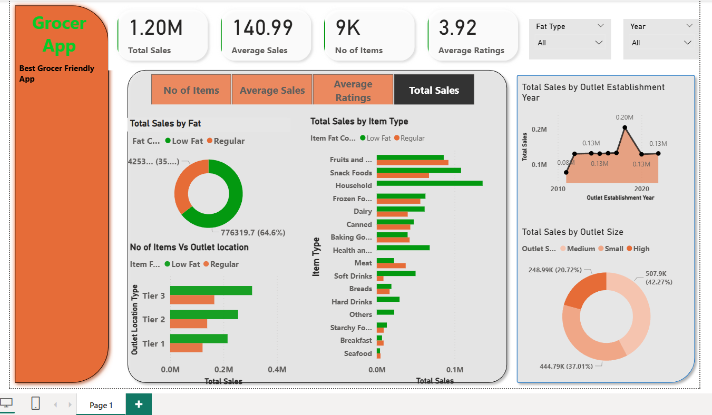

← Back to Home
Grocery App Sales Analysis — Full Report
Power BI dashboard + business insights + recommendations.
Total Sales: 1.20M
Avg Sales: 140.99
Items: 9K
Avg Rating: 3.92
Dashboard
Below is the main Power BI dashboard page used in this analysis.

The dashboard highlights sales split by fat category, item type performance, outlet location tier comparisons,
outlet establishment year trends, and outlet size contribution to sales.
Key Insights (from the dashboard)
1) Category performance differs significantly
- Item types contribute unevenly to total sales — a few categories lead overall performance.
- This suggests inventory and promotions should focus on the strongest categories first.
2) Outlet characteristics impact revenue
- Sales vary by outlet size and location tier, meaning store profile affects buying behaviour.
- Tier-based planning helps: different store types need different product mixes and campaigns.
3) Establishment year trend shows maturity effects
- Some outlet establishment periods show higher total sales than others.
- Older/more mature outlets may have stronger customer base and repeat purchase behaviour.
4) Ratings provide a quality signal
- Average rating is 3.92 — decent, but there is room to improve customer experience.
- Better product quality, availability, and store experience can raise ratings and retention.
Recommendations
- Focus on top-performing item types: prioritise stocking and promotions for the highest sales categories.
- Tier-based store strategy: tailor product mix and offers by outlet location tier.
- Improve underperforming outlets: use outlet size + sales insights to identify stores needing intervention.
- Boost ratings: address product availability and quality issues that impact customer satisfaction.
- Track improvements: refresh dashboard monthly and measure KPI movement.
Skills Demonstrated
- Power BI dashboard development and KPI reporting
- Retail analytics (category, outlet, trend-based analysis)
- Data storytelling with business recommendations
- Repository documentation for recruiters (GitHub Pages)